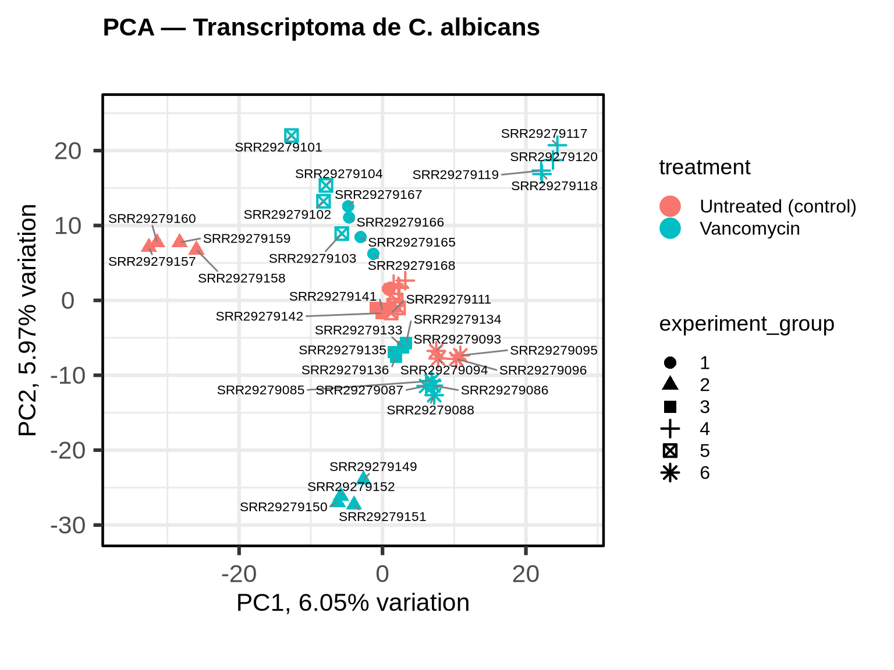
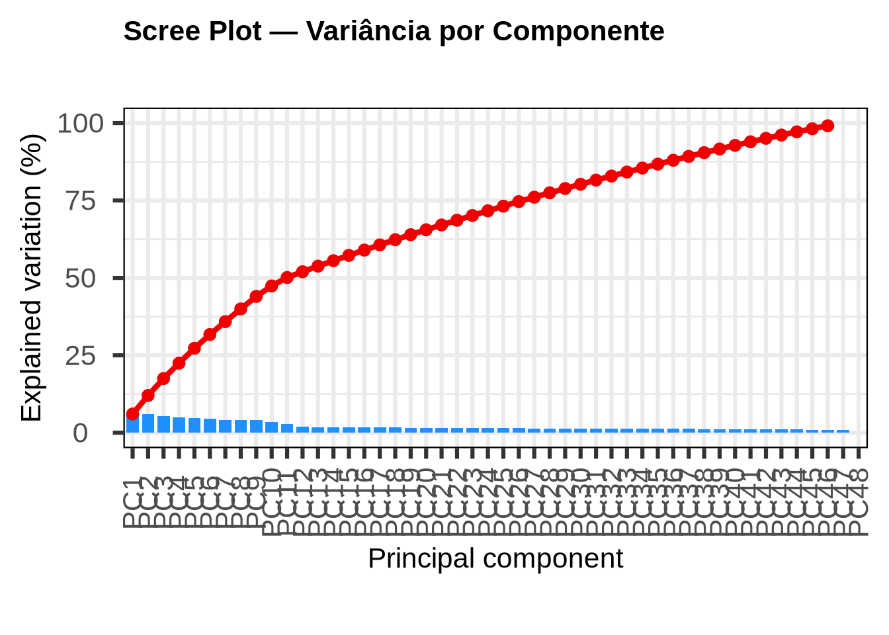
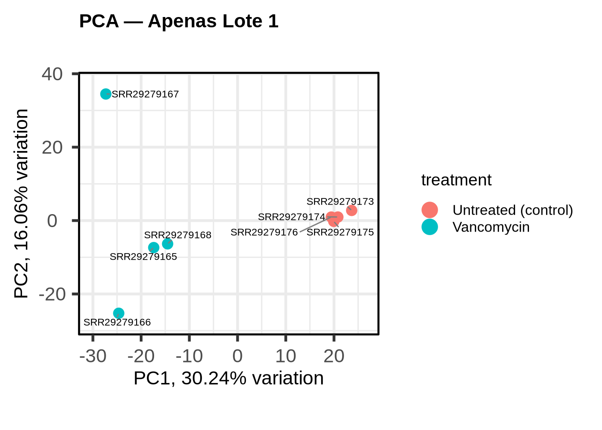
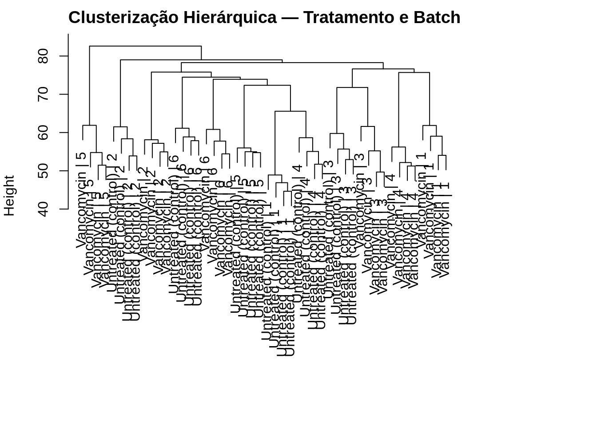
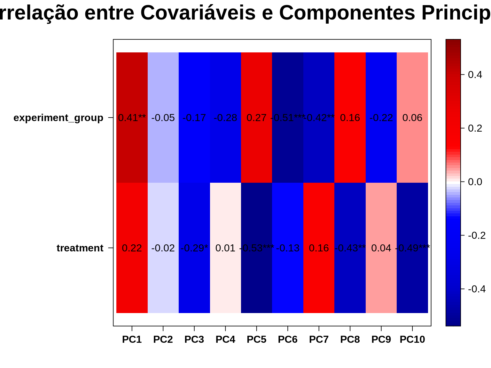
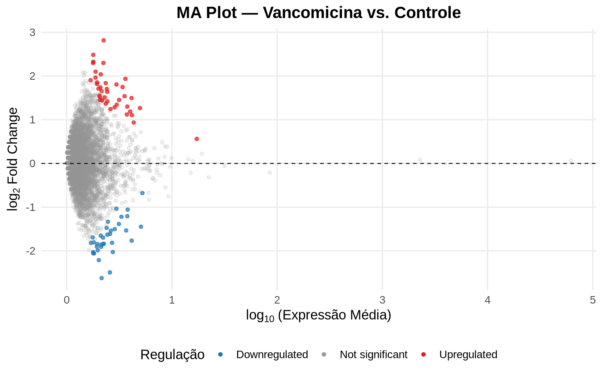
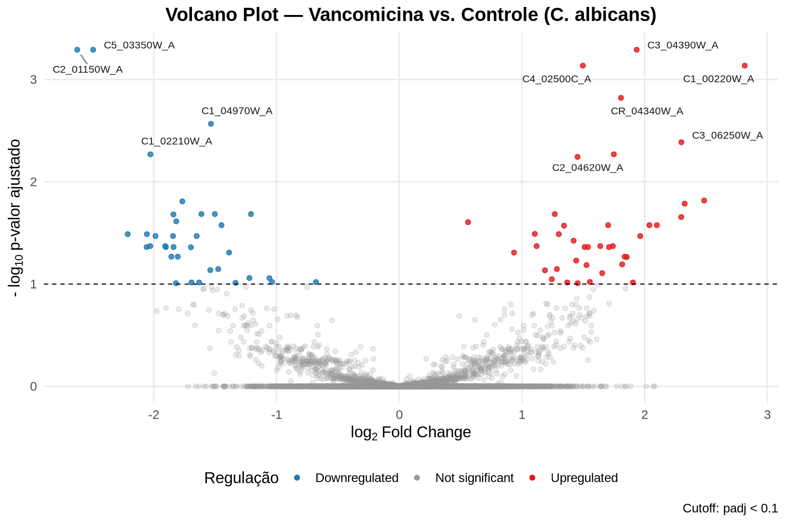
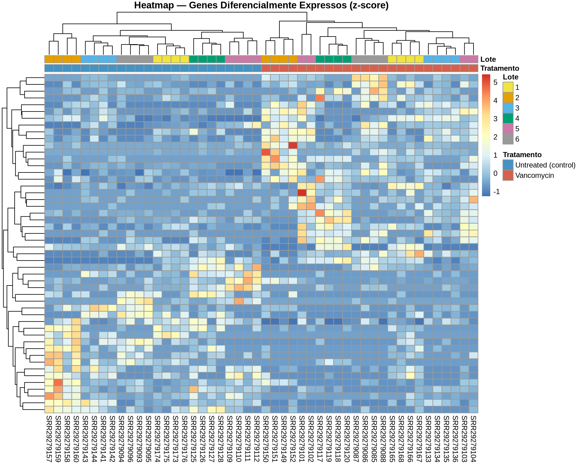

5 Análise de Expressão Diferencial
5.1 Nas etapas anteriores, descontaminamos as reads do hospedeiro (Mus musculus) e quantificamos o transcriptoma de Candida albicans com o nf-core/rnaseq. O resultado final desse pipeline é uma matriz de contagens, onde cada linha representa um gene e cada coluna uma amostra. A partir dessa matriz, podemos realizar a análise de expressão diferencial para identificar quais genes da Candida foram regulados (upregulados ou downregulados) em resposta ao tratamento com vancomicina.
6 Sanidade de Dados
Antes de realizarmos a análise de expressão diferencial propriamente dita, é fundamental explorar a estrutura do nosso conjunto de dados. Essa etapa, frequentemente chamada de sanidade de dados ou análise exploratória, serve para responder perguntas essenciais:
- As amostras se agrupam conforme esperamos (por tratamento)?
- Existem outliers ou amostras com comportamento atípico?
- Quais variáveis do metadado influenciam a expressão gênica?
Para tal, precisamos de técnicas que consigam lidar com a multidimensionalidade dos dados: estamos analisando milhares de genes simultaneamente. Técnicas como a Análise de Componentes Principais (PCA) e a clusterização hierárquica nos permitem “resumir” essa complexidade e visualizar padrões.
6.1 1. Carregando os Pacotes
Vamos começar carregando os pacotes que utilizaremos ao longo de toda esta seção prática.
6.2 2. Importando a Matriz de Contagens
O nf-core/rnaseq com o quantificador Salmon gera uma tabela consolidada com as contagens de todos os genes por amostra. Vamos carregá-la:
# A tibble: 5 × 6
gene_id gene_name SRR29279085 SRR29279086 SRR29279087 SRR29279088
<chr> <chr> <dbl> <dbl> <dbl> <dbl>
1 C1_00010W_A C1_00010W_A 0 0 0 0
2 C1_00020C_A C1_00020C_A 2 4 1 2
3 C1_00030C_A C1_00030C_A 0 0 0 0
4 C1_00040W_A CTA2 0 0 0 0
5 C1_00050C_A C1_00050C_A 0 0 0 0A primeira coluna (gene_id) contém os identificadores dos genes de Candida albicans no Ensembl Fungi, e a segunda (gene_name) contém o nome do gene quando disponível. As demais colunas são as amostras, identificadas pelo código SRR.
6.3 3. Importando os Metadados
As informações sobre as condições experimentais de cada amostra estão no arquivo SraRunTable.csv, obtido do SRA. Precisamos filtrá-lo para manter apenas as amostras que foram estimuladas com Candida albicans. Vamos organizar o metadado para que ele possa ser facilmente integrado com a matriz de contagens. O DESeq2 exige que as colunas da matriz de contagens correspondam às linhas do metadado, e que o metadado contenha as variáveis que queremos testar (neste caso, o tratamento) e as covariáveis (como o grupo experimental).
Além da variável de interesse (treatment), nosso metadado contém uma informação crucial: o lote experimental (experiment_group). Como vimos na descrição do conjunto de dados, o experimento foi conduzido em 6 lotes independentes, cada um contendo 4 amostras tratadas com vancomicina e 4 controles. Diferenças entre lotes, como variações no dia de cultivo, preparo de reagentes ou condições de extração, podem introduzir variabilidade que não é interessante para o objetivo do estudo. Se não levarmos isso em conta, corremos o risco de confundir efeito de batch com efeito do tratamento, o que pode gerar tanto falsos positivos quanto falsos negativos nos resultados da expressão diferencial.
# Importar metadados e filtrar amostras estimuladas com C. albicans
sra_table <- read_csv(here::here("data/SraRunTable.csv"), show_col_types = FALSE)
metadata <- sra_table %>%
filter(stimulus == "Candida albicans") %>%
dplyr::select(Run, treatment, experiment_group) %>%
mutate(treatment = factor(treatment,
levels = c("Untreated (control)", "Vancomycin")),
experiment_group = factor(experiment_group,
levels = c(1, 2, 3, 4, 5, 6))
) %>%
column_to_rownames("Run")
metadata[order(metadata$experiment_group),] treatment experiment_group
SRR29279165 Vancomycin 1
SRR29279173 Untreated (control) 1
SRR29279166 Vancomycin 1
SRR29279167 Vancomycin 1
SRR29279168 Vancomycin 1
SRR29279174 Untreated (control) 1
SRR29279175 Untreated (control) 1
SRR29279176 Untreated (control) 1
SRR29279149 Vancomycin 2
SRR29279157 Untreated (control) 2
SRR29279150 Vancomycin 2
SRR29279151 Vancomycin 2
SRR29279152 Vancomycin 2
SRR29279158 Untreated (control) 2
SRR29279159 Untreated (control) 2
SRR29279160 Untreated (control) 2
SRR29279133 Vancomycin 3
SRR29279141 Untreated (control) 3
SRR29279134 Vancomycin 3
SRR29279135 Vancomycin 3
SRR29279136 Vancomycin 3
SRR29279142 Untreated (control) 3
SRR29279143 Untreated (control) 3
SRR29279144 Untreated (control) 3
SRR29279117 Vancomycin 4
SRR29279125 Untreated (control) 4
SRR29279118 Vancomycin 4
SRR29279119 Vancomycin 4
SRR29279120 Vancomycin 4
SRR29279126 Untreated (control) 4
SRR29279127 Untreated (control) 4
SRR29279128 Untreated (control) 4
SRR29279101 Vancomycin 5
SRR29279109 Untreated (control) 5
SRR29279102 Vancomycin 5
SRR29279103 Vancomycin 5
SRR29279104 Vancomycin 5
SRR29279110 Untreated (control) 5
SRR29279111 Untreated (control) 5
SRR29279112 Untreated (control) 5
SRR29279085 Vancomycin 6
SRR29279093 Untreated (control) 6
SRR29279086 Vancomycin 6
SRR29279087 Vancomycin 6
SRR29279088 Vancomycin 6
SRR29279094 Untreated (control) 6
SRR29279095 Untreated (control) 6
SRR29279096 Untreated (control) 6Repare que cada amostra biológica (experiment_group) possui 4 runs de sequenciamento (SRR). No nosso caso, o nf-core/rnaseq quantificou cada run individualmente. Isso significa que temos réplicas técnicas que devem ser levadas em consideração. Poderíamos agregá-las somando as contagens, mas como o DESeq2 lida naturalmente com o modelo de expressão, vamos mantê-las separadas e incluir o experiment_group no design para absorver essa variabilidade.
6.4 4. Preparando a Matriz de Contagens
Agora precisamos transformar a tabela importada em uma matriz numérica compatível com o DESeq2, e garantir que apenas as amostras de interesse (com estímulo por Candida) estejam presentes.
# Transformar em matriz numérica com gene_id como rownames
count_matrix <- gene_counts %>%
dplyr::select(gene_id, all_of(rownames(metadata))) %>%
column_to_rownames("gene_id") %>%
as.matrix()
# O DESeq2 requer valores inteiros
count_matrix <- round(count_matrix)
# Verificar correspondência entre metadado e contagens
identical(colnames(count_matrix), rownames(metadata))[1] TRUEdim(count_matrix)[1] 6468 48Temos 6468 genes e 48 amostras prontos para análise.
6.5 5. Criando o Objeto DESeq2
O DESeq2 trabalha com um objeto especial (DESeqDataSet) que armazena juntos a matriz de contagens, o metadado e o modelo estatístico. Aqui, nosso modelo inclui o experiment_group como covariável e o treatment como a variável de interesse:
dds <- DESeqDataSetFromMatrix(countData = count_matrix,
colData = metadata,
design = ~ experiment_group + treatment)Antes de prosseguirmos, vamos aplicar a Variance Stabilizing Transformation (VST). Dados de RNA-seq possuem uma característica chamada heteroscedasticidade: a variância das contagens aumenta conforme a média de expressão cresce (ou seja, genes altamente expressos apresentam maior variância absoluta). Por outro lado, se aplicássemos apenas uma transformação logarítmica simples, os genes de baixa expressão ficariam com uma variância artificialmente inflada. A transformação VST corrige esse comportamento, tornando a variância mais homogênea em todos os níveis de expressão. Isso é essencial para análises exploratórias, como a PCA e a clusterização, mas não para o teste de expressão diferencial em si (que exige as contagens brutas não normalizadas).
dds_vst <- varianceStabilizingTransformation(dds)
counts_vst <- assay(dds_vst)6.6 6. Análise de Componentes Principais (PCA)
A PCA é uma técnica de redução de dimensionalidade que projeta os milhares de genes em um número menor de componentes. Cada componente principal captura um eixo de variabilidade nos dados:
- PC1 captura a maior fonte de variação.
- PC2 captura a segunda maior, e assim por diante.
Se o tratamento com vancomicina realmente altera o perfil transcricional da Candida, esperamos ver as amostras se separarem por grupo ao longo de uma das primeiras componentes.

6.6.1 Como interpretar o biplot:
- Proximidade entre pontos indica similaridade no perfil de expressão global. Amostras do mesmo grupo de tratamento devem se agrupar.
- Eixos PC1 e PC2: o percentual ao lado de cada eixo indica quanto da variância total aquela componente explica. Se PC1 sozinha explica, por exemplo, 40% da variância, ela é a dimensão dominante do seu dado.
- A forma dos pontos diferencia os grupos experimentais (réplicas biológicas), o que permite avaliar se a variação entre réplicas é menor do que a variação entre tratamentos — o cenário ideal.
6.7 7. Scree Plot
O scree plot mostra a proporção de variância explicada por cada componente principal. Ele ajuda a responder: quantas dimensões são necessárias para descrever a variabilidade do meu dado?
screeplot(pca_result,
components = getComponents(pca_result),
title = "Scree Plot — Variância por Componente")
Procure pelo ponto onde a curva se achata (elbow). Geralmente, em dados de RNA-seq, as 2–4 primeiras componentes são suficientes para descrever a maior parte da variabilidade. No nosso caso, é normal que as duas primeiras componentes não expliquem uma fração muito alta da variância. Isso acontece porque temos 6 lotes experimentais independentes, cada um introduzindo sua própria fonte de variabilidade. A variância total acaba sendo “fragmentada” entre muitas componentes, cada uma capturando a variação de um ou mais lotes. Se analisássemos um único lote, veríamos PC1 e PC2 explicando uma proporção bem maior.
6.7.1 PCA dentro de um único lote
Para ilustrar esse ponto, vamos repetir a PCA usando apenas as amostras do lote 1 (um par vancomicina/controle com suas réplicas técnicas):
# Filtrar apenas amostras do lote 2
meta_batch1 <- metadata[metadata$experiment_group == "1", , drop = FALSE]
counts_batch1 <- counts_vst[, rownames(meta_batch1)]
pca_batch1 <- pca(counts_batch1, metadata = meta_batch1)
biplot(pca_batch1,
colby = "treatment",
legendPosition = "right",
title = "PCA — Apenas Lote 1")
Note como, isolando um único lote, a separação entre vancomicina e controle se torna mais evidente e as primeiras componentes explicam uma proporção maior da variância. Isso reforça a necessidade de incluir o experiment_group como covariável no nosso modelo.
6.8 8. Clusterização Hierárquica
A clusterização hierárquica agrupa as amostras com base na distância euclidiana entre seus perfis de expressão, construindo um dendrograma. Amostras com perfis mais similares são conectadas mais próximas na árvore.
# Transpor a matriz: cada amostra vira uma linha
counts_vst_t <- t(counts_vst)
# Calcular distâncias euclidianas
d <- dist(counts_vst_t, method = "euclidean")
# Clusterizar com ligação completa
clusters <- hclust(d, method = "complete")
# 1. Criar um vetor de novos rótulos combinando as colunas
# Garantimos que a ordem dos metadados seja a mesma das amostras na matriz
novos_rotulos <- paste(metadata[rownames(counts_vst_t), "treatment"],
metadata[rownames(counts_vst_t), "experiment_group"],
sep = " | ")
# 2. Plotar o dendrograma usando o argumento 'labels'
par(mar = c(4, 4, 2, 8)) # Aumentar a margem direita se os nomes forem longos
plot(clusters,
labels = novos_rotulos,
main = "Clusterização Hierárquica — Tratamento e Batch",
xlab = "",
sub = "",
cex = 1) # Font size
6.8.1 Como interpretar o dendrograma:
- Amostras que compartilham um ramo próximo possuem perfil de expressão semelhante.
- O ideal é que as amostras se agrupem por tratamento (vancomicina vs. controle) e não por outras variáveis como o lote experimental.
- Se amostras de grupos diferentes estiverem misturadas, isso pode indicar um efeito biológico fraco ou um forte efeito de batch.
6.9 9. Análise de Covariáveis
Uma análise de expressão diferencial é, em essência, um modelo de regressão aplicado a cada gene. A variável principal é o tratamento (vancomicina vs. controle), mas outras variáveis, como o grupo experimental (lote/batch), podem influenciar significativamente a expressão.
A função eigencorplot nos permite visualizar quais variáveis do metadado se correlacionam com as primeiras componentes principais, ajudando na decisão de quais covariáveis incluir no modelo.
eigencorplot(pca_result,
metavars = c("treatment", "experiment_group"),
main = "Correlação entre Covariáveis e Componentes Principais")
Se o experiment_group (lote biológico) se correlaciona fortemente com alguma das primeiras componentes, isso significa que parte da variabilidade que observamos vem do lote de cultivo celular, e não do efeito da vancomicina. Ao incluir essa variável no modelo do DESeq2 (~ experiment_group + treatment), “descontamos” esse efeito e aumentamos o poder estatístico para detectar os genes realmente alterados pelo tratamento.
A sanidade dos nossos dados nos deu uma visão geral da sua estrutura. As amostras se comportam como esperado? Há outliers que precisam de atenção? Com essas respostas em mãos, podemos avançar com confiança para a próxima etapa.
7 Análise de Expressão Diferencial de Genes (DGE)
Agora chegamos à pergunta central deste curso: quais genes da Candida albicans mudaram de comportamento em resposta à vancomicina?
A análise de Expressão Diferencial de Genes (DGE) é, essencialmente, um modelo de regressão aplicado a cada gene individualmente. O DESeq2 implementa um Modelo Linear Generalizado (GLM) baseado na distribuição Binomial Negativa, que é particularmente adequada para dados de contagem de RNA-seq, onde a variância geralmente excede a média (sobredispersão).
7.1 10. Rodando o DESeq2
A função DESeq() congrega três etapas internas:
-
Estimativa dos fatores de normalização (
estimateSizeFactors): corrige diferenças na profundidade de sequenciamento entre amostras. -
Estimativa da dispersão (
estimateDispersions): modela a variabilidade dos dados gene a gene, compartilhando informação entre genes com expressão similar. -
Teste estatístico (
nbinomWaldTest): aplica o modelo e testa a significância para cada gene.
Lembre-se que, na seção 5, definimos o modelo do DESeq2 com a fórmula ~ experiment_group + treatment. É nessa fórmula que resolvemos o problema dos lotes experimentais. A lógica funciona assim:
- A variável
experiment_groupentra como covariável (o primeiro termo da fórmula). Isso instrui o DESeq2 a “descontar” a variabilidade que vem das diferenças entre os 6 lotes antes de avaliar o efeito do tratamento. - A variável
treatmenté a variável de interesse (o último termo). O teste estatístico será aplicado sobre ela.
Na prática, o modelo estima para cada gene: “quanto da expressão se explica pelo lote?” e, removendo esse efeito, pergunta: “o que sobra é explicado pelo tratamento com vancomicina?”. Sem essa correção, diferenças entre lotes poderiam ser falsamente atribuídas ao tratamento — ou, inversamente, mascarar efeitos reais.
# Rodar o pipeline completo do DESeq2
dds <- DESeq(dds)7.2 11. Extraindo os Resultados
Precisamos agora extrair os resultados para o contraste que nos interessa. Um contraste é a comparação entre dois grupos de uma variável categórica. No nosso caso, queremos comparar Vancomycin vs. Untreated (control).
A função results() aceita o argumento contrast, um vetor de 3 elementos:
- O nome da variável (
treatment). - O grupo correspondente ao tratamento (
Vancomycin). - O grupo correspondente à referência (
Untreated (control)).
A interpretação do resultado depende diretamente da ordem com que o contraste é construído. No nosso caso, a referência é o grupo controle (não tratado). Portanto:
- Log2FC positivo → gene com expressão maior nas amostras tratadas com vancomicina (upregulado).
- Log2FC negativo → gene com expressão menor nas amostras tratadas com vancomicina (downregulado).
Se invertêssemos a ordem do contraste, a interpretação seria a oposta.
Vamos transformar o resultado em um data frame e inspecionar as colunas:
res_dge <- as.data.frame(res_dge)
head(res_dge) baseMean log2FoldChange lfcSE stat pvalue padj
C1_00010W_A 0.13073479 0.2439030 2.5493706 0.09567186 0.9237812 NA
C1_00020C_A 1.35871278 -0.7858614 0.5442897 -1.44382928 0.1487870 0.5357854
C1_00030C_A 0.02292633 0.2485875 2.9448570 0.08441413 0.9327272 NA
C1_00040W_A 0.03442856 0.3688108 2.9448570 0.12523896 0.9003344 NA
C1_00050C_A 0.03644129 -0.1120823 2.9448570 -0.03806036 0.9696396 NA
C1_00060W_A 0.36778762 0.4121354 1.3458047 0.30623715 0.7594241 NAO data frame res_dge contém as seguintes colunas para cada gene:
-
baseMean: média dos valores de contagens normalizados para todas as amostras. -
log2FoldChange: métrica que indica a intensidade e a direção da mudança de expressão (positivo = up, negativo = down). -
lfcSE: erro padrão do log2FC. -
stat: estatística do teste de Wald. -
pvalue: p-valor do teste. -
padj: p-valor ajustado pelo método de Benjamini-Hochberg (FDR), que corrige para os múltiplos testes (um por gene).
O DESeq2 atribui NA ao padj de genes com contagens muito baixas ou com dispersão extrema. Esses genes não possuem evidência estatística suficiente para serem testados e, na prática, são considerados não significativos.
7.3 12. Definindo os Genes Diferencialmente Expressos
Para identificar os genes significativos, vamos utilizar o critério de padj ≤ 0.1. Além disso, vamos classificar cada gene como Upregulated, Downregulated de acordo com o log2FC ou Not significant:
Em publicações científicas, o corte mais comumente utilizado é padj ≤ 0.05. Neste minicurso, utilizamos um limiar mais permissivo (padj ≤ 0.1) para fins didáticos, permitindo que tenhamos um número maior de genes diferencialmente expressos para demonstrar as análises downstream (enriquecimento funcional e visualizações). Em um cenário de pesquisa real, recomendamos utilizar padj ≤ 0.05.
Downregulated Not significant Upregulated
35 6393 40 7.4 13. MA Plot
O MA Plot é a primeira visualização diagnóstica da expressão diferencial. Ele relaciona a expressão média de cada gene (eixo X, em escala log) com o log2 Fold Change estimado (eixo Y). Genes significativos aparecem em destaque.
ggplot(res_dge, aes(x = log10(baseMean + 1), y = log2FoldChange, color = signif)) +
geom_point(aes(alpha = signif), size = 1.2) +
scale_color_manual(
values = c("Downregulated" = "#1F78B4",
"Not significant" = "grey60",
"Upregulated" = "#E31A1C"),
name = "Regulação"
) +
scale_alpha_manual(
values = c("Downregulated" = 0.7,
"Not significant" = 0.15,
"Upregulated" = 0.7),
guide = "none"
) +
geom_hline(yintercept = 0, linetype = "dashed", color = "black", linewidth = 0.4) +
labs(
title = "MA Plot — Vancomicina vs. Controle",
x = expression(log[10] ~ "(Expressão Média)"),
y = expression(log[2] ~ "Fold Change")
) +
theme_minimal(base_size = 13) +
theme(
plot.title = element_text(hjust = 0.5, face = "bold"),
legend.position = "bottom",
panel.grid.minor = element_blank()
)
7.4.1 Como interpretar o MA Plot:
- Genes à esquerda (baixo baseMean) possuem baixa expressão. Mudanças grandes nesse intervalo devem ser interpretadas com cautela, pois a incerteza estatística é alta.
- Genes significativos (coloridos) que se afastam da linha central (log2FC = 0) são os que realmente mudaram de expressão entre as condições.
- O ideal é que a nuvem de pontos cinza esteja centralizada em zero, indicando que a normalização foi adequada.
7.5 14. Volcano Plot
O Volcano Plot é o gráfico mais utilizado para visualizar resultados de expressão diferencial. Ele combina a significância estatística (-log10 do p-valor ajustado, eixo Y) com a magnitude da mudança (log2FC, eixo X), permitindo identificar rapidamente os genes mais relevantes.
library(ggrepel)
padj_cutoff <- 0.1 # Limiar didático (em pesquisa, use 0.05)
# Selecionar os top 10 genes mais significativos para rotular
genes_to_label <- res_dge %>%
filter(signif != "Not significant") %>%
arrange(padj) %>%
head(10)
ggplot(res_dge, aes(x = log2FoldChange, y = -log10(padj), color = signif)) +
geom_point(aes(alpha = signif), size = 1.5) +
scale_color_manual(
values = c("Downregulated" = "#1F78B4",
"Not significant" = "grey60",
"Upregulated" = "#E31A1C"),
name = "Regulação"
) +
scale_alpha_manual(
values = c("Downregulated" = 0.8,
"Not significant" = 0.2,
"Upregulated" = 0.8),
guide = "none"
) +
geom_hline(yintercept = -log10(padj_cutoff),
linetype = "dashed", color = "black", linewidth = 0.4) +
geom_text_repel(
data = genes_to_label,
aes(label = rownames(genes_to_label)),
size = 3,
box.padding = 0.5,
point.padding = 0.3,
max.overlaps = Inf,
segment.color = "grey50",
color = "gray9"
) +
labs(
title = "Volcano Plot — Vancomicina vs. Controle (C. albicans)",
x = expression(log[2] ~ "Fold Change"),
y = expression("-" ~ log[10] ~ "p-valor ajustado"),
caption = paste0("Cutoff: padj < ", padj_cutoff)
) +
theme_minimal(base_size = 13) +
theme(
plot.title = element_text(hjust = 0.5, face = "bold"),
legend.position = "bottom",
panel.grid.minor = element_blank(),
panel.background = element_rect(fill = "white", color = NA),
plot.background = element_rect(fill = "white", color = NA)
)
7.5.1 Como interpretar o Volcano Plot:
- Eixo X (log2FC): genes à direita estão upregulados sob o tratamento de vancomicina; genes à esquerda estão downregulados.
- Eixo Y (-log10 padj): quanto mais alto o ponto, mais significativa é a mudança. A linha tracejada marca o threshold de padj = 0.1.
- Os genes rotulados são os top 10 mais significativos.
Observe a distribuição entre upregulados e downregulados. Se o tratamento com vancomicina remodela a resposta transcricional da Candida, esperamos ver genes envolvidos em resistência a estresse, remodelamento da parede celular e virulência entre os mais significativos. Genes de housekeeping devem permanecer na região cinza central.
7.6 15. Heatmap dos Genes Diferencialmente Expressos
O heatmap nos permite visualizar o padrão de expressão dos genes significativos em todas as amostras simultaneamente. Para isso, utilizamos os valores de expressão normalizados transformados em z-score (escala por gene), o que evidencia as diferenças relativas entre condições.
# Filtrar apenas os genes significativos (padj <= 0.05)
res_dge_signif <- subset(res_dge, padj <= 0.05)
# Obter contagens normalizadas
exp_genes <- DESeq2::counts(dds, normalized = TRUE)
# Selecionar apenas os genes DEG
idx <- rownames(exp_genes) %in% rownames(res_dge_signif)
exp_dge <- exp_genes[idx, ]
# Transformar em z-score (por gene)
exp_dge_z <- t(apply(exp_dge, 1, scale, center = TRUE, scale = TRUE))
colnames(exp_dge_z) <- colnames(exp_dge)
# Criar anotação das colunas
ann_col <- data.frame(
Tratamento = metadata$treatment,
Lote = metadata$experiment_group,
row.names = rownames(metadata)
)
ann_colors <- list(
Tratamento = c("Untreated (control)" = "#4393C3", "Vancomycin" = "#D6604D"),
Lote = c("1" = "#F0E442", "2" = "#E69F00", "3" = "#56B4E9",
"4" = "#009E73", "5" = "#CC79A7", "6" = "#999999")
)
# Plotar heatmap
pheatmap(exp_dge_z,
show_rownames = FALSE,
annotation_col = ann_col,
annotation_colors = ann_colors,
cluster_cols = TRUE,
fontsize = 9,
main = "Heatmap — Genes Diferencialmente Expressos (z-score)")
7.6.1 Como interpretar o heatmap:
- Cada linha é um gene diferencialmente expresso e cada coluna é uma amostra.
- As cores representam o z-score: vermelho indica expressão acima da média daquele gene, enquanto azul indica expressão abaixo da média.
- A barra de anotação superior diferencia as amostras por tratamento e lote.
- Se os genes DEG segregam perfeitamente as amostras por tratamento, isso confirma que o sinal biológico é forte e consistente entre os lotes.
- Note que as linhas são clusterizadas: genes com padrões de expressão similares ficam próximos, revelando blocos de genes co-regulados.
Identificamos os genes da Candida albicans cuja expressão mudou significativamente em resposta à vancomicina. Mas o que esses genes fazem? A quais vias biológicas eles pertencem? Essas perguntas serão respondidas na próxima seção, onde realizaremos a análise de enriquecimento funcional.